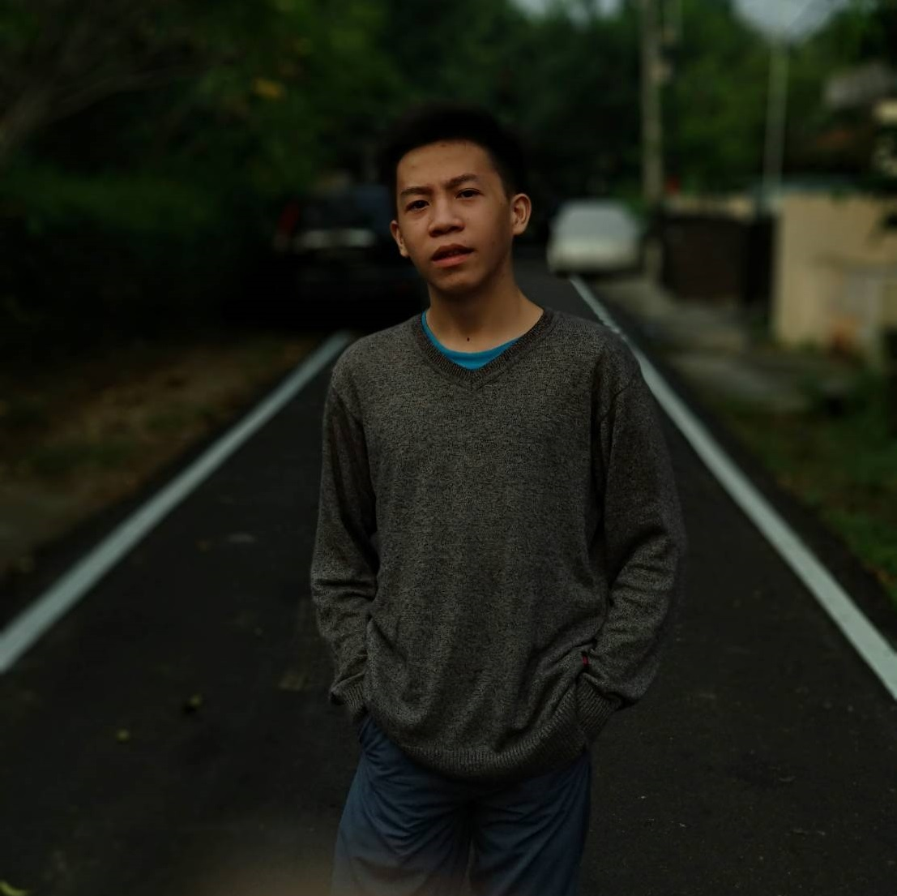

ANIME YANG RILIS PADA FALL 2019
byAdrian Nicholas
NakaNime | 2018
Jumat,24 Agustus 2018

1.Fiary Tail S3
Serial Anime Televisi :
Sutradara : Shinji Ishihara
Studio 1 : A-1 Pictures
Studio 2 : Satelight (#1–175)
Studio 3 : Bridge (#176–)
Produser : Taihei Yamanishi
Tomonori Ochikoshi
Yoshikazu Beniya,Yōsuke Imai
Penulis : Masashi Sogo
Penggubah : Yasuharu Takanashi
Tayang perdana : 12 Oktober 2009
Mangga:
Nama : Fairy Tail
Penerbit : Kodansha
Pengarang : Hiro Mashima
Genre : Petualangan, fantasi
Demografi : Shōnen
Majalah : Weekly Shōnen Magazine
Tanggal terbit: 2 Agustus 2006
Film:
Fairy Tail the Movie: Phoenix Priestess (2012)
Fairy Tail: Dragon Cry (2017)
Fairy Tail (bahasa Jepang: フェアリーテイル Hepburn: Fearī Teiru) adalah sebuah seri manga Jepang yang ditulis dan diilustrasikan oleh Hiro Mashima. Manga ini diserialisasikan di Weekly Shōnen Magazine sejak tanggal 2 Agustus 2006 hingga 26 Juli 2017, dan telah dibundel dan diterbitkan menjadi 63 volume tankōbon oleh Kodansha. Ceritanya mengisahkan petualangan Natsu Dragneel, seorang penyihir (魔導士 madōshi) yang merupakan anggota dari guild (perkumpulan sihir) populer, Fairy Tail, dalam tujuannya untuk mencari seekor naga bernama Igneel.
Manga-nya telah diadaptasi menjadi sebuah serial anime yang diproduksi oleh A-1 Pictures, Dentsu Inc., Satelight dan Bridge dan mulai ditayangkan di Jepang pada tanggal 12 Oktober 2009. Selain itu, A-1 Pictures telah memproduksi tujuh animasi video asli dan dua film animasi. Musim pertama berakhir pada tanggal 30 Maret 2013. Musim kedua tayang di TV Tokyo pada tanggal 5 April 2014, dan berakhir pada tanggal 26 Maret 2016. Musim ketiga dari serial anime dijadwalkan untuk tayang pada Musim Gugur 2018.
Fairy Tail pada awalnya dilisensikan untuk dirilis dalam bahasa Inggris di Amerika Utara oleh Del Rey Manga, yang mulai merilis volume individu sejak tanggal 25 Maret 2008 dan mengakhiri lisensinya ketika volume ke-12 dirilis pada bulan September 2010. Pada bulan Desember 2010, Kodansha USA mengambil alih perilisan seri ini untuk wilayah Amerika Utara. Saluran televisi Asia Tenggara Animax Asia menyiarkan versi bahasa Inggris dari anime dalam tujuh musim sejak tahun 2010 hingga 2015. Anime-nya telah dilisensi oleh Funimation untuk rilisan berbahasa Inggris di Amerika Utara. Hingga bulan Februari 2017, Fairy Tail telah terjual sebanyak 60 juta kopi dalam bentuk cetak.

2.One Punch Man S2
Serial Anime Televisi :
Sutradara : Shinji Ishihara
Studio 1 : A-1 Pictures
Studio 2 : Satelight (#1–175)
Studio 3 : Bridge (#176–)
Produser : Taihei Yamanishi
Tomonori Ochikoshi
Yoshikazu Beniya,Yōsuke Imai
Penulis : Masashi Sogo
Penggubah : Yasuharu Takanashi
Tayang perdana : 12 Oktober 2009
Serial Anime Televisi :
Sutradara 1 : Shingo Natsume (season 1)
Sutradara 2 :Chikara Sakurai (season 2)
Studio 1 :Madhouse (season 1)
Studio 2 : J.C. Staff (season 2)
Produser : Chinatsu Matsui,Nobuyuki Hosoya,Keita Kodama,Ayuri Taguchi
Penulis : Tomohiro Suzuki
Penggubah : Makoto Miyazaki
Tayang perdana : 5 Oktober 2015
Mangga:
Nama : One Punch Man
Penerbit : Shueisha
Genre : Aksi, Komedi, Superhero, Fiksi Manga
Demografi : Seinen
Majalah : Young Jump Web Comics
Tanggal terbit: 2009 – sekarang
One Punch Man ( ワンパンマン Wanpanman) adalah sebuah serial manga Jepang yang menceritakan seorang superhero yang bernama Saitama. One-Punch Man dibuat oleh seorang penulis yang asal jepang dengan nama samaran ONE yang mulai diterbitkan pada awal tahun 2009. Serial ini segera menjadi viral sehingga mampu melampaui 7,9 juta hits pada bulan Juni 2012. One-Punch Man merupakan kontraksi wanpanchi ("One-Punch ") yang artinya satu pukulan.
Sebuah remake manga digital dari seri ini, yang diilustrasikan oleh Yusuke Murata, mulai dipublikasikan di situs Web Komedi Langsung Jumpa Shueisha di tahun 2012. Bab-bab tersebut dikumpulkan secara berkala dan dicetak ke dalam volume tankōbon, dengan dua belas dirilis pada tanggal 2 Desember 2016. Viz Media memiliki lisensi remake untuk serialisasi bahasa Inggris di majalah digital Weekly Shonen Jump.
Adaptasi televisi anime oleh Madhouse ditayangkan di Jepang antara bulan Oktober dan Desember 2015. Itu dijuluki dalam bahasa Inggris selama musim panas 2016, dan kemudian pada tahun itu sebuah musim kedua yang direncanakan diumumkan. Pada tanggal 25 September 2017, diumumkan bahwa mereka akan mengubah baik perusahaan produksi maupun direkturnya.